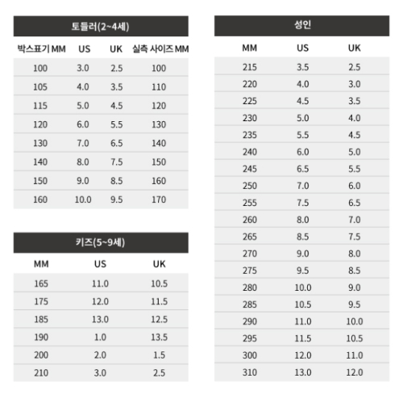

DESCRIPTION
SIZE
CARE
90년대 로우탑 슈즈를 재현한 모델
견고한 스웨이드 소재 어퍼
푹신한 설포와 발목 칼라
푹신한 3D 몰드 사이드 스트라이프™
편안한 착화를 도와주는 뒤꿈치 고리
시그니처 고무 와플 아웃솔
사이즈 가이드

- 신발의 뒤꿈치를 꺾어신을 경우, 뒤축보강재가 발 뒤꿈치를 상하게 할 수 있으므로 올바른 착화법을 권장합니다.
- 현재의 염색 기술로는 이염을 100% 완전하게는 방지할 수 없습니다. 천연가죽 소재를 사용한 신발 또는 이염의 가능성이 있는 소재를 사용한 신발은 물, 땀, 마찰에 의해 이염 현상이 발생하므로 백색 또는 엷은 색의 양말이나 옷을 착용하는 경우에는 주의하여 주십시오.
- 기름기가 있는 곳, 화기의 노출이 우려되는 곳에서의 착화는 신발의 변형이 오거나 불길이 옮겨 붙을 수 있습니다.